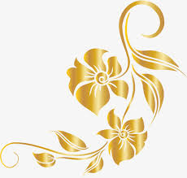

CSS Float
 Batik adalah kain yang dilukis menggunakan canting dan cairan lilin malam sehingga membentuk lukisan-lukisan bernilai seni tinggi diatas kain mori. Batik berasal dari kata amba dan tik yang merupakan bahasa jawa, yang artinya adalah menulis titik. Kalau jaman dulu disebutnya ambatik.
Mengapa titik? Alat yang digunakan untuk membuat motif batik adalah canting. Garis dan motif yang dihasilkan oleh canting selalu terdiri dari sebuah titik.Batik berdasarkan KBBI (Kamus Besar Bahasa Indonesia), batik merujuk kepada sebuah kata benda. Yang dimaksud disini adalah kain batik atau baju batik yang sudah selesai dilukis.
Walaupun yang dimaksud secara definisi adalah batik tulis yang menggunakan canting, namun metode pembuatan batik sendiri ada beberapa, seperti cap, cetak, dan printing. Ada juga batik yang dibuat pakai kuas Bung, namanya batik lukis, tapi cukup jarang ditemukan. Semua akan kita bahas lebih lanjut nanti pada bagian kedua.
Bila kita telusuri secara makna, batik itu adalah sebuah teknik untuk mempertahankan warna diatas kain dengan menggunakan malam atau lilin.